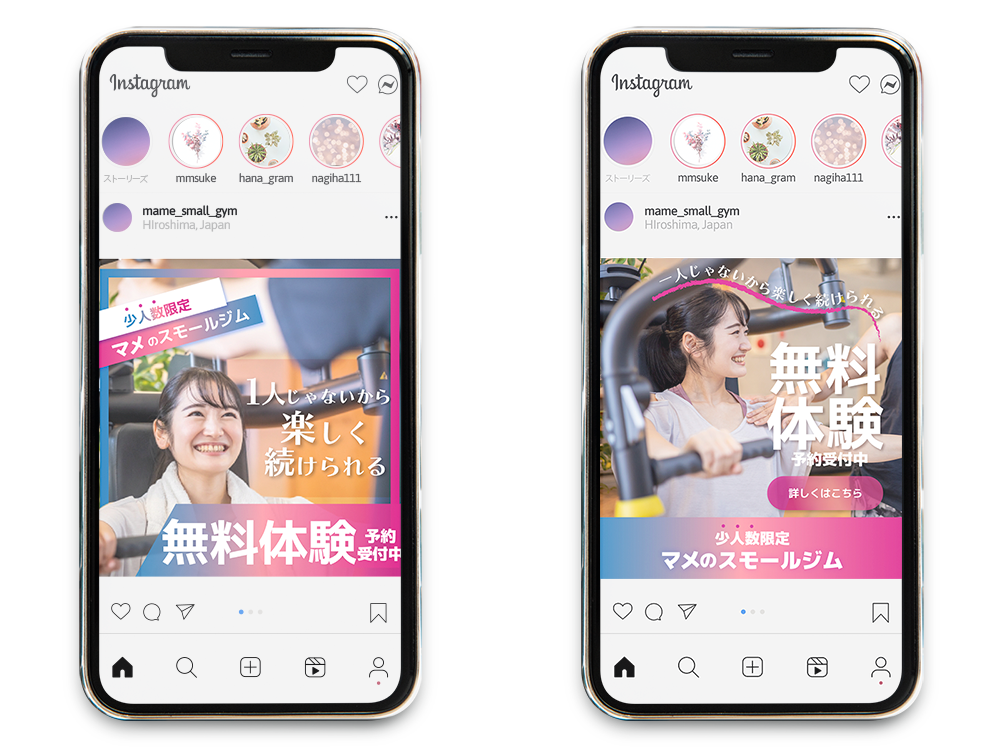

女性向けスポーツジムの集客用広告バナー
バナーデザイン（コンペ作品）

- 概要
-
新規オープンの女性向け少人数ジムの集客用広告バナーデザインです。
デザインコンペに出す為、作成しました。
企業名はダミーに差し替えております。【依頼詳細】
- ロゴの文字列：・一人じゃないから楽しく続けられる。
- 利用用途:HP、SNS
- ターゲット層：20〜40代女性
- 雰囲気：女性らしいデザイン
- ターゲット層
- あまり運動が得意ではない、これから運動を始めようと考えている20-40代の女性
- 目的・ゴール
- バナーを見た人が『あまり運動が得意ではないが、気軽に楽しく続けられそう』という気になり、無料体験に来てくれ新規の顧客開拓に繋げる。
- 制作ポイント
-
気軽に挑戦できるようなジムのイメージを持っていただけるよう、トレンドのグラデーションを使用して女性らしくさわやかな印象に仕上げました。
ジムのコンセプトである ”ひとりではない” を踏まえジムに通う仲間、もしくはトレーナーの方と楽しく運動をしているような写真を選定いたしました。気軽に挑戦できる敷居の低いジムとのことでしたので、フォントや文字の配置に動きを出し、楽しい雰囲気にしました。
- 制作期間
- 2時間
- 使用ツール
- illustrator